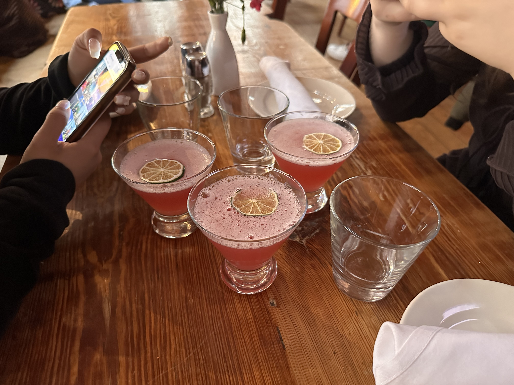
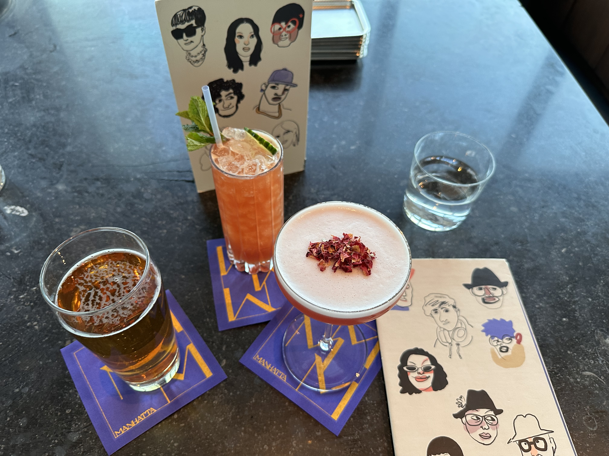
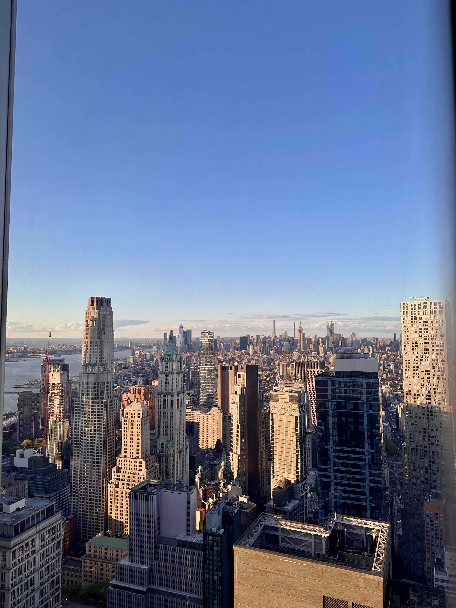
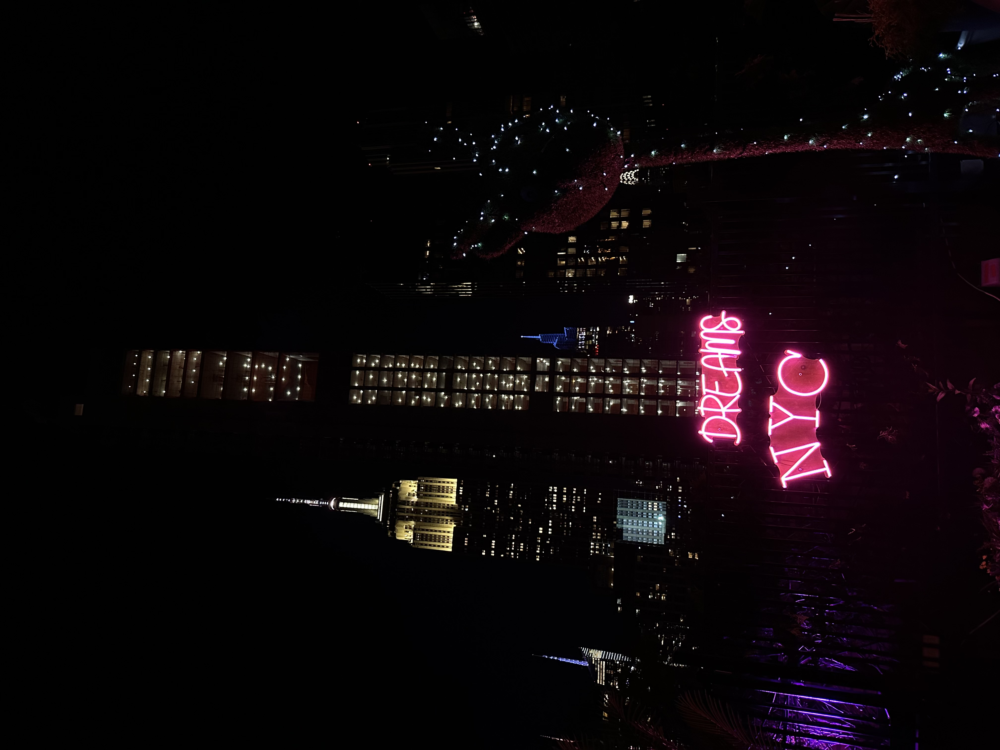

Onieal´s
Ett absolut måste för alla Sex and the City-fans (det var här som baren Scout låg i serien)! Vi tog varsin cosmopolitan, the obvious choice.

Manhatta
New Yorks bästa utsikts-rooftop. Ganska dold med inte så mycket folk. Dyra drinkar, men så värt det för utsikten. Vi var verkligen outcasts här, bara busniess människorn i kostym med dyra väskor. Om ni vill passa in rekommenderar jag att klä upp er inför detta besök, möjligtvis boka ett bord i förväg för att visa er dominans.


Rooftop 360
Bästa stället för good times, bra musik och fantastisk utsikt över hela staden. PS, blir dansgolv till natten...
